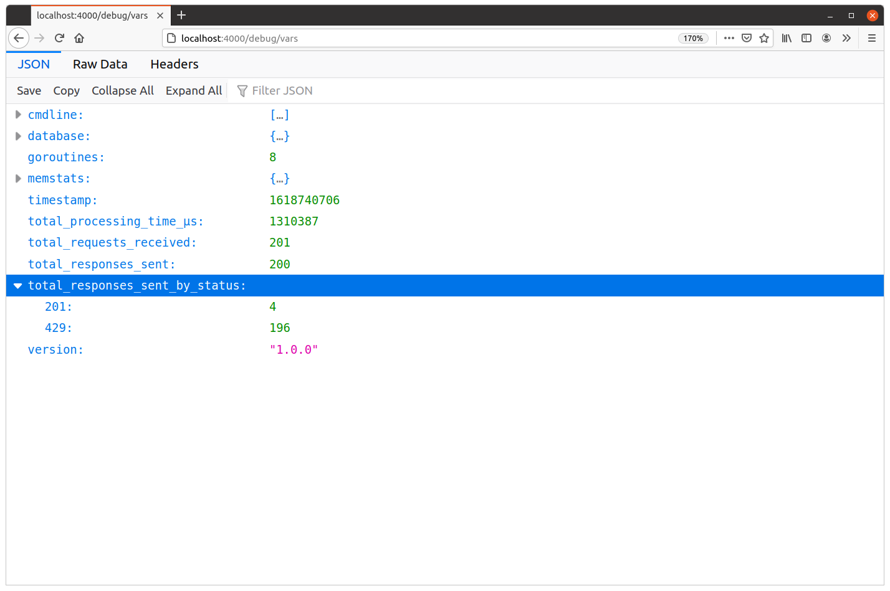

ثبت کدهای وضعیت HTTP
علاوه بر ثبت تعداد کل پاسخهای ارسالشده، میتوانیم فراتر برویم و middleware metrics() خود را گسترش دهیم تا دقیقاً شمارش کنیم که پاسخهای ما چه کدهای وضعیت HTTPای داشتهاند.
بخش دشوار این کار، فهمیدن کد وضعیت HTTP پاسخ در middleware metrics() ماست. متأسفانه Go بهصورت پیشفرض از این قابلیت پشتیبانی نمیکند — هیچ روش داخلی برای بررسی یک http.ResponseWriter و دیدن اینکه چه کد وضعیتی به client ارسال خواهد شد، وجود ندارد.
برای دریافت کد وضعیت پاسخ، بهجای آن باید http.ResponseWriter سفارشی خودمان را بسازیم که یک نسخه از کد وضعیت HTTP را برای دسترسیهای بعدی ذخیره کند.
پیش از انتشار Go 1.20، انجام این کار شکننده بود و بهسختی درست کار میکرد. اما اکنون Go دارای نوع http.ResponseController با پشتیبانی از unwrap کردن http.ResponseWriter است، بنابراین پیادهسازی آن بسیار سادهتر شده است.
اساساً، ما میخواهیم یک struct بسازیم که یک http.ResponseWriter موجود را wrap کند و متدهای سفارشی Write() و WriteHeader() روی آن پیادهسازی شده باشد که کد وضعیت پاسخ را ثبت کنند. بهطور مهم، همچنین باید یک متد Unwrap() روی آن پیادهسازی کنیم که مقدار اصلی، wrapشده http.ResponseWriter را برگرداند.
کدی که میخواهیم بنویسیم به این شکل است:
// The metricsResponseWriter type wraps an existing http.ResponseWriter and also // contains a field for recording the response status code, and a boolean flag to // indicate whether the response headers have already been written. type metricsResponseWriter struct { wrapped http.ResponseWriter statusCode int headerWritten bool } // This function returns a new metricsResponseWriter instance which wraps a given // http.ResponseWriter and has a status code of 200 (which is the status // code that Go will send in an HTTP response by default). func newMetricsResponseWriter(w http.ResponseWriter) *metricsResponseWriter { return &metricsResponseWriter{ wrapped: w, statusCode: http.StatusOK, } } // The Header() method is a simple 'pass through' to the Header() method of the // wrapped http.ResponseWriter. func (mw *metricsResponseWriter) Header() http.Header { return mw.wrapped.Header() } // Again, the WriteHeader() method does a 'pass through' to the WriteHeader() // method of the wrapped http.ResponseWriter. But after this returns, // we also record the response status code (if it hasn't already been recorded) // and set the headerWritten field to true to indicate that the HTTP response // headers have now been written. func (mw *metricsResponseWriter) WriteHeader(statusCode int) { mw.wrapped.WriteHeader(statusCode) if !mw.headerWritten { mw.statusCode = statusCode mw.headerWritten = true } } // Likewise the Write() method does a 'pass through' to the Write() method of the // wrapped http.ResponseWriter. Calling this will automatically write any // response headers, so we set the headerWritten field to true. func (mw *metricsResponseWriter) Write(b []byte) (int, error) { mw.headerWritten = true return mw.wrapped.Write(b) } // We also need an Unwrap() method which returns the existing wrapped // http.ResponseWriter. func (mw *metricsResponseWriter) Unwrap() http.ResponseWriter { return mw.wrapped }
نکته مهم این است که نوع metricsResponseWriter ما http.ResponseWriter interface را برآورده میکند. متدهای Header()، WriteHeader() و Write() با امضای مناسب را دارد، بنابراین میتوانیم آن را در handlerهایمان دقیقاً مانند حالت عادی استفاده کنیم.
همچنین توجه کنید که کد وضعیت را تا بعد از فراخوانی ‘pass through’ در متد WriteHeader() ثبت نمیکنیم. دلیل این امر آن است که یک panic در آن عملیات (احتمالاً به دلیل یک کد وضعیت نامعتبر) ممکن است به این معنا باشد که در نهایت کد وضعیت متفاوتی به client ارسال شود.
در نهایت، همچنین یک کد وضعیت پیشفرض 200 OK در تابع newMetricsResponseWriter() تنظیم میکنیم. مهم است که این مقدار پیشفرض را اینجا تنظیم کنیم، در صورتی که handler هرگز Write() یا WriteHeader() را فراخوانی نکند.
اما در نهایت، metricsResponseWriter ما در واقع فقط یک لایه سبک روی یک مقدار http.ResponseWriter موجود است.
بیایید ادامه دهیم و middleware metrics() خود را برای استفاده از این تطبیق دهیم. همچنین باید یک متغیر جدید total_responses_sent_by_status با استفاده از تابع expvar.NewMap() منتشر کنیم. این به ما یک map میدهد که در آن میتوانیم کدهای وضعیت HTTP مختلف را همراه با تعداد پاسخهای در حال اجرا برای هر وضعیت ذخیره کنیم.
فایل cmd/api/middleware.go را به شکل زیر بهروزرسانی کنید:
package main import ( "errors" "expvar" "fmt" "net" "net/http" "strconv" // New import "strings" "sync" "time" "greenlight.alexedwards.net/internal/data" "greenlight.alexedwards.net/internal/validator" "golang.org/x/time/rate" ) ... type metricsResponseWriter struct { wrapped http.ResponseWriter statusCode int headerWritten bool } func newMetricsResponseWriter(w http.ResponseWriter) *metricsResponseWriter { return &metricsResponseWriter{ wrapped: w, statusCode: http.StatusOK, } } func (mw *metricsResponseWriter) Header() http.Header { return mw.wrapped.Header() } func (mw *metricsResponseWriter) WriteHeader(statusCode int) { mw.wrapped.WriteHeader(statusCode) if !mw.headerWritten { mw.statusCode = statusCode mw.headerWritten = true } } func (mw *metricsResponseWriter) Write(b []byte) (int, error) { mw.headerWritten = true return mw.wrapped.Write(b) } func (mw *metricsResponseWriter) Unwrap() http.ResponseWriter { return mw.wrapped } func (app *application) metrics(next http.Handler) http.Handler { var ( totalRequestsReceived = expvar.NewInt("total_requests_received") totalResponsesSent = expvar.NewInt("total_responses_sent") totalProcessingTimeMicroseconds = expvar.NewInt("total_processing_time_μs") // Declare a new expvar map to hold the count of responses for each HTTP status // code. totalResponsesSentByStatus = expvar.NewMap("total_responses_sent_by_status") ) return http.HandlerFunc(func(w http.ResponseWriter, r *http.Request) { start := time.Now() totalRequestsReceived.Add(1) // Create a new metricsResponseWriter, which wraps the original // http.ResponseWriter value that the metrics middleware received. mw := newMetricsResponseWriter(w) // Call the next handler in the chain using the new metricsResponseWriter // as the http.ResponseWriter value. next.ServeHTTP(mw, r) totalResponsesSent.Add(1) // At this point, the response status code should be stored in the // mw.statusCode field. Note that the expvar map is string-keyed, so we // need to use the strconv.Itoa() function to convert the status code // (which is an integer) to a string. Then we use the Add() method on // our new totalResponsesSentByStatus map to increment the count for the // given status code by 1. totalResponsesSentByStatus.Add(strconv.Itoa(mw.statusCode), 1) duration := time.Since(start).Microseconds() totalProcessingTimeMicroseconds.Add(duration) }) }
خوب، بیایید آن را امتحان کنیم. دوباره API را اجرا کنید، اما این بار rate limiter را فعال بگذارید. به این شکل:
$ go run ./cmd/api time=2023-09-10T10:59:13.722+02:00 level=INFO msg="database connection pool established" time=2023-09-10T10:59:13.722+02:00 level=INFO msg="starting server" addr=:4000 env=development
سپس دوباره از hey استفاده کنید تا باری روی endpoint POST /v1/tokens/authentication ایجاد کنید. این باید به تعداد کمی پاسخ موفق 201 Created منجر شود، اما به دلیل برخورد با rate limit، پاسخهای 429 Too Many Requests بسیار بیشتری دریافت خواهید کرد.
$ BODY='{"email": "alice@example.com", "password": "pa55word"}'
$ hey -d "$BODY" -m "POST" http://localhost:4000/v1/tokens/authentication
Summary:
Total: 0.3351 secs
Slowest: 0.3334 secs
Fastest: 0.0001 secs
Average: 0.0089 secs
Requests/sec: 596.9162
Total data: 7556 bytes
Size/request: 37 bytes
Response time histogram:
0.000 [1] |
0.033 [195] |■■■■■■■■■■■■■■■■■■■■■■■■■■■■■■■■■■■■■■■■
0.067 [0] |
0.100 [0] |
0.133 [0] |
0.167 [0] |
0.200 [0] |
0.233 [0] |
0.267 [0] |
0.300 [0] |
0.333 [4] |■
Latency distribution:
10% in 0.0002 secs
25% in 0.0002 secs
50% in 0.0014 secs
75% in 0.0047 secs
90% in 0.0075 secs
95% in 0.0088 secs
99% in 0.3311 secs
Details (average, fastest, slowest):
DNS+dialup: 0.0008 secs, 0.0001 secs, 0.3334 secs
DNS-lookup: 0.0006 secs, 0.0000 secs, 0.0041 secs
req write: 0.0002 secs, 0.0000 secs, 0.0033 secs
resp wait: 0.0078 secs, 0.0001 secs, 0.3291 secs
resp read: 0.0000 secs, 0.0000 secs, 0.0015 secs
Status code distribution:
[201] 4 responses
[429] 196 responses
و اگر به معیارها در مرورگر خود نگاه کنید، اکنون باید تعدادهای متناظر هر کد وضعیت را در زیر آیتم total_responses_sent_by_status ببینید، مشابه این:

اطلاعات اضافی
visualize کردن و تحلیل معیارها
اکنون که تعدادی معیار خوب سطح اپلیکیشن ثبت میشوند، کل مسئله باید با آنها چه کرد؟ مطرح است.
پاسخ این سؤال از پروژهای به پروژه دیگر متفاوت خواهد بود.
برای برخی اپلیکیشنهای کمارزش، ممکن است کافی باشد که هر از گاهی — یا فقط زمانی که مشکلی را مشکوک میدانید — معیارها را بهصورت دستی بررسی کنید و مطمئن شوید که چیز غیرعادی یا نامتعارفی وجود ندارد.
در پروژههای دیگر، ممکن است بخواهید اسکریپتی بنویسید که بهطور دورهای دادههای JSON را از endpoint GET /debug/vars دریافت کند و تحلیلهای بیشتری انجام دهد. این ممکن است شامل عملکردهایی باشد که اگر چیزی غیرعادی به نظر میرسد به شما هشدار دهند.
در سمت دیگر طیف، ممکن است بخواهید از ابزاری مانند Prometheus برای دریافت و visualize کردن دادهها از endpoint و نمایش نمودارهای معیارها بهصورت real-time استفاده کنید.
گزینههای متفاوت زیادی وجود دارد و کار درست واقعاً به نیازهای پروژه و کسبوکار شما بستگی دارد. اما در تمام موارد، استفاده از پکیج expvar برای جمعآوری و منتشر کردن معیارها، پلتفرم عالیای به شما میدهد که از طریق آن میتوانید هر ابزار نظارت، هشدار یا visualization خارجی را integrate کنید.
آمیختهشده http.ResponseWriter
اگر بخواهید، میتوانید struct metricsResponseWriter را طوری تغییر دهید که بهجای wrap کردن، یک http.ResponseWriter را embed کند. به این شکل:
type metricsResponseWriter struct { http.ResponseWriter statusCode int headerWritten bool } func newMetricsResponseWriter(w http.ResponseWriter) *metricsResponseWriter { return &metricsResponseWriter{ ResponseWriter: w, statusCode: http.StatusOK, } } func (mw *metricsResponseWriter) WriteHeader(statusCode int) { mw.ResponseWriter.WriteHeader(statusCode) if !mw.headerWritten { mw.statusCode = statusCode mw.headerWritten = true } } func (mw *metricsResponseWriter) Write(b []byte) (int, error) { mw.headerWritten = true return mw.ResponseWriter.Write(b) } func (mw *metricsResponseWriter) Unwrap() http.ResponseWriter { return mw.ResponseWriter }
این نتیجه نهایی یکسانی با روش اصلی به شما میدهد. با این حال، مزیت آن این است که نیازی به نوشتن متد Header() برای struct metricsResponseWriter ندارید (این متد بهطور خودکار از http.ResponseWriter آمیختهشده ارتقا مییابد). در مقابل، ضرر آن — حداقل از دید من — این است که کمی کمتر از استفاده از یک فیلد wrapped واضح و صریح است. هر رویکردی خوب است، و واقعاً فقط یک مسئله سلیقه است که کدام را ترجیح دهید.